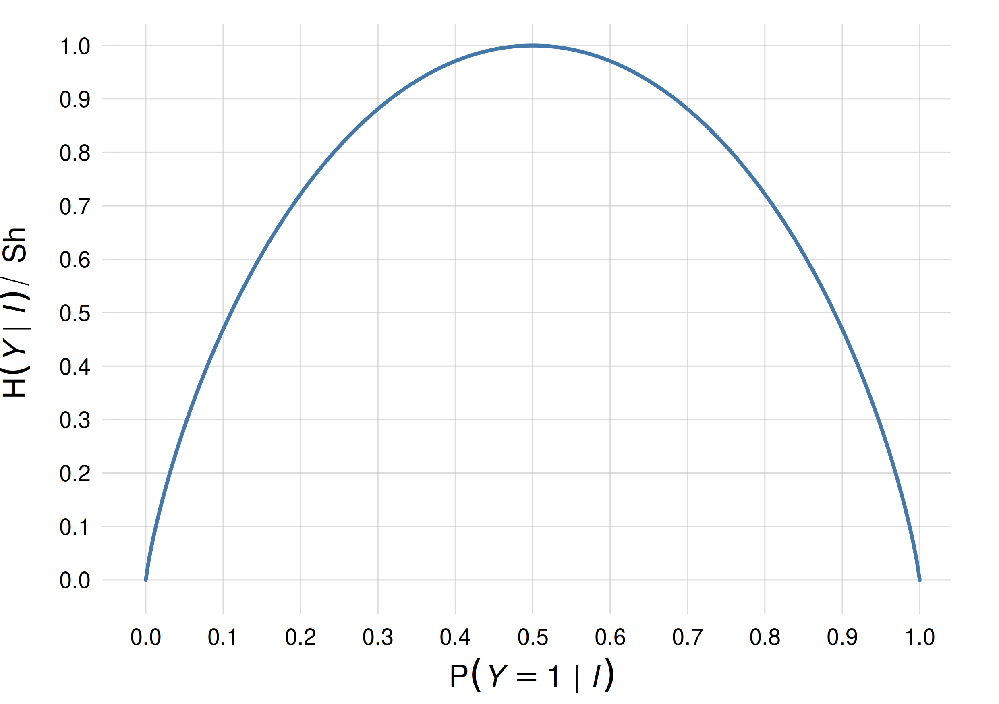

18 Information, relevance, independence, association
\(\DeclarePairedDelimiter{\set}{\{}{\}}\)
18.1 Independence of sentences
In an ordinary situation represented by background information \(\mathsfit{I}\), if you have to infer whether a coin will land heads, then knowing that it is raining outside has no impact on your inference. The information about rain is irrelevant for your inference. In other words, your degree of belief about the coin remains the same if you include the information about rain in the conditional.
In probability notation, representing “The coin lands heads” with \(\mathsfit{H}\), and “It rains outside” with \(\mathsfit{R}\), this irrelevance is expressed by this equality:
\[ \mathrm{P}(\mathsfit{H} \nonscript\:\vert\nonscript\:\mathopen{} \mathsfit{I}) = \mathrm{P}(\mathsfit{H} \nonscript\:\vert\nonscript\:\mathopen{} \mathsfit{R} \mathbin{\mkern-0.5mu,\mkern-0.5mu}\mathsfit{I}) \]
More generally two sentences \(\mathsfit{A}\), \(\mathsfit{B}\) are said to be mutually irrelevant or informationally independent given knowledge \(\mathsfit{I}\) if any one of these three conditions holds:
“independEnt” is written with an E, not with an A.
\(\mathrm{P}(\mathsfit{A}\nonscript\:\vert\nonscript\:\mathopen{}\mathsfit{B}\mathbin{\mkern-0.5mu,\mkern-0.5mu}\mathsfit{I}) = \mathrm{P}(\mathsfit{A}\nonscript\:\vert\nonscript\:\mathopen{} \mathsfit{I})\)
\(\mathrm{P}(\mathsfit{B}\nonscript\:\vert\nonscript\:\mathopen{} \mathsfit{A}\mathbin{\mkern-0.5mu,\mkern-0.5mu}\mathsfit{I}) = \mathrm{P}(\mathsfit{B}\nonscript\:\vert\nonscript\:\mathopen{} \mathsfit{I})\)
\(\mathrm{P}(\mathsfit{A}\mathbin{\mkern-0.5mu,\mkern-0.5mu}\mathsfit{B}\nonscript\:\vert\nonscript\:\mathopen{} \mathsfit{I}) = \mathrm{P}(\mathsfit{A}\nonscript\:\vert\nonscript\:\mathopen{} \mathsfit{I}) \cdot \mathrm{P}(\mathsfit{B}\nonscript\:\vert\nonscript\:\mathopen{} \mathsfit{I})\)
These three conditions turn out to be equivalent to one another. In the first condition, \(\mathrm{P}(\mathsfit{A}\nonscript\:\vert\nonscript\:\mathopen{}\mathsfit{B}\mathbin{\mkern-0.5mu,\mkern-0.5mu}\mathsfit{I})\) is undefined if \(\mathrm{P}(\mathsfit{B}\nonscript\:\vert\nonscript\:\mathopen{}\mathsfit{I})=0\), but in this case independence still holds; analogously in the second condition.
18.2 Independence of quantities
The notion of irrelevance of two sentences can be generalized to quantities. Take two quantities \(X\) and \(Y\). They are said to be mutually irrelevant or informationally independent given knowledge \(\mathsfit{I}\) if any one of these three equivalent conditions holds for all possible values \(x\) of \(X\) and \(y\) of \(Y\):
\(\mathrm{P}(X\mathclose{}\mathord{\nonscript\mkern 0mu\textrm{\small=}\nonscript\mkern 0mu}\mathopen{}x \nonscript\:\vert\nonscript\:\mathopen{}Y\mathclose{}\mathord{\nonscript\mkern 0mu\textrm{\small=}\nonscript\mkern 0mu}\mathopen{}y \mathbin{\mkern-0.5mu,\mkern-0.5mu}\mathsfit{I}) = \mathrm{P}(X\mathclose{}\mathord{\nonscript\mkern 0mu\textrm{\small=}\nonscript\mkern 0mu}\mathopen{}x \nonscript\:\vert\nonscript\:\mathopen{} \mathsfit{I})\) all \(x,y\)
\(\mathrm{P}(Y\mathclose{}\mathord{\nonscript\mkern 0mu\textrm{\small=}\nonscript\mkern 0mu}\mathopen{}y \nonscript\:\vert\nonscript\:\mathopen{} X\mathclose{}\mathord{\nonscript\mkern 0mu\textrm{\small=}\nonscript\mkern 0mu}\mathopen{}x \mathbin{\mkern-0.5mu,\mkern-0.5mu}\mathsfit{I}) = \mathrm{P}(Y\mathclose{}\mathord{\nonscript\mkern 0mu\textrm{\small=}\nonscript\mkern 0mu}\mathopen{}y \nonscript\:\vert\nonscript\:\mathopen{} \mathsfit{I})\) all \(x,y\)
\(\mathrm{P}(X\mathclose{}\mathord{\nonscript\mkern 0mu\textrm{\small=}\nonscript\mkern 0mu}\mathopen{}x \mathbin{\mkern-0.5mu,\mkern-0.5mu}Y\mathclose{}\mathord{\nonscript\mkern 0mu\textrm{\small=}\nonscript\mkern 0mu}\mathopen{}y \nonscript\:\vert\nonscript\:\mathopen{} \mathsfit{I}) = \mathrm{P}(X\mathclose{}\mathord{\nonscript\mkern 0mu\textrm{\small=}\nonscript\mkern 0mu}\mathopen{}x \nonscript\:\vert\nonscript\:\mathopen{} \mathsfit{I}) \cdot \mathrm{P}(Y\mathclose{}\mathord{\nonscript\mkern 0mu\textrm{\small=}\nonscript\mkern 0mu}\mathopen{}y \nonscript\:\vert\nonscript\:\mathopen{} \mathsfit{I})\) all \(x,y\)
Note the difference between independence of two sentences and independence of two quantities. The latter independence involves not just two, but many sentences: as many as the combinations of values of \(X\) and \(Y\).
In fact it may happen that for some particular values \(x^*\) of \(X\) and \(y^*\) \(Y\) the probabilities become independent:
\[ \mathrm{P}(X\mathclose{}\mathord{\nonscript\mkern 0mu\textrm{\small=}\nonscript\mkern 0mu}\mathopen{}x^* \nonscript\:\vert\nonscript\:\mathopen{} Y\mathclose{}\mathord{\nonscript\mkern 0mu\textrm{\small=}\nonscript\mkern 0mu}\mathopen{}y^* \mathbin{\mkern-0.5mu,\mkern-0.5mu}\mathsfit{I}) = \mathrm{P}(X\mathclose{}\mathord{\nonscript\mkern 0mu\textrm{\small=}\nonscript\mkern 0mu}\mathopen{}x^* \nonscript\:\vert\nonscript\:\mathopen{}\mathsfit{I}) \]
while at the same time this equality does not occur for other values. In this case the quantities \(X\) and \(Y\) are not independent given information \(\mathsfit{I}\). The general idea is that two quantities are independent if knowledge about one of them cannot change an agent’s beliefs about the other, no matter what their values might be.
18.3 Information and uncertainty
The definition of irrelevance given above appears to be very “black or white”: either two sentences or quantities are independent, or they aren’t. But in reality there is no such dichotomy. We can envisage some scenario \(\mathsfit{I}\) where for instance the probabilities \(\mathrm{P}(Y\mathclose{}\mathord{\nonscript\mkern 0mu\textrm{\small=}\nonscript\mkern 0mu}\mathopen{}y \nonscript\:\vert\nonscript\:\mathopen{} X\mathclose{}\mathord{\nonscript\mkern 0mu\textrm{\small=}\nonscript\mkern 0mu}\mathopen{}x \mathbin{\mkern-0.5mu,\mkern-0.5mu}\mathsfit{I})\) and \(\mathrm{P}(Y\mathclose{}\mathord{\nonscript\mkern 0mu\textrm{\small=}\nonscript\mkern 0mu}\mathopen{}y \nonscript\:\vert\nonscript\:\mathopen{} \mathsfit{I})\) are extremely close in value, although not exactly equal:
\[ \mathrm{P}(Y\mathclose{}\mathord{\nonscript\mkern 0mu\textrm{\small=}\nonscript\mkern 0mu}\mathopen{}y \nonscript\:\vert\nonscript\:\mathopen{} X\mathclose{}\mathord{\nonscript\mkern 0mu\textrm{\small=}\nonscript\mkern 0mu}\mathopen{}x \mathbin{\mkern-0.5mu,\mkern-0.5mu}\mathsfit{I}) = \mathrm{P}(Y\mathclose{}\mathord{\nonscript\mkern 0mu\textrm{\small=}\nonscript\mkern 0mu}\mathopen{}y \nonscript\:\vert\nonscript\:\mathopen{} \mathsfit{I}) + \delta(x,y) \]
with \(\delta(x,y)\) very small. This would mean that knowledge about \(X\) modifies an agent’s belief just a little. And depending on the situation such modification could be unimportant. In this situation the two quantities would be “independent” for all practical purposes. Therefore there really are degrees of relevance, rather than a dichotomy “relevant vs irrelevant”.
This suggests that we try to quantify such degrees. This quantification would also give a measure of how “important” a quantity can be for inferences about another quantity.
This is the domain of Information Theory, which would require a course by itself to be properly explored. In this chapter we shall just get an overview of the main ideas and notions of this theory.
The notion of “degree of relevance” is important in data science and machine learning, because it rigorously quantifies two related, intuitive ideas often occurring in these fields:
“Correlation” or “association”: in its general meaning, it’s the idea that if an agent’s beliefs about some quantity change, then beliefs about another quantity may change as well.
“Feature importance”: it’s the idea that knowledge about some aspects of a given problem may lead to improved inferences about other aspects.
In the next section we explore, through examples, some tricky aspects and peculiarities of these ideas. These examples also tell us which kind of properties a quantitative measure for “relevance” or “importance” or “informativeness” should possess.
18.4 Exploring “importance”: some scenarios
The following examples are only meant to give an intuitive motivation of the notions presented later.
First two required properties: a lottery scenario
A lottery comprises 1 000 000 tickets numbered from 000000 to 999999. One of these tickets is the winner. Its number is already known, but unknown to you. You are allowed to choose any ticket you like (you can see the ticket numbers), before the winning number is announced.
Before you choose, you have the possibility of getting for free some clues about the winning number. The clues are these:
- Clue A:
- The first four digits of the winning number.
- Clue B:
- The 1st, 2nd, 3rd, and 5th digits of the winning number.
- Clue C:
- The last three digits of the winning number.
Now consider the following three “clue scenarios”.
Scenario 1: choose one clue
You have the possibility of choosing one of the three clues above. Which would you choose, in order of importance?
Obviously A or B are the most important, and equally important, because they increase your probability of winning from 1/1 000 000 to 1/100. C is the least important because it increases your probability of winning to 1/1000.
Scenario 2: discard one clue
All three clues are put in front of you (but you can’t see their digits). If you could keep all three, then you’d win for sure because they would give you all digits of the winning number.
You are instead asked to discard one of the three clues, keeping the remaining too. Which would you discard, in order of least importance?
If you discarded A, then B and C together would give you all digits of the winning number; so you would still win for sure. Analogously if you discarded B. If you discarded C, then A and B together would not give you the last digit; so you’d have a 1/10 probability of winning.
Obviously C is the most important clue to keep, and A and B are the least important.
Scenario 3: discard one more clue
In the previous Scenario 2, we saw that discarding A or B would not alter your 100% probability of winning. Either clue could therefore be said to have “importance = 0”.
If you had to discard both A and B, however, your situation would suddenly become worse, with only a 1/1000 probability of winning. Clues A and B together can therefore be said to have high “importance > 0”.
Let’s draw some conclusions by comparing the scenarios above.
In Scenario 1 we found that the “importance ranking” of the clues is
A = B > C
whereas in Scenario 2 we found the completely opposite ranking
C > A = B
We conclude:
In Scenario 3 we found that two clues may be completely unimportant if considered individually, but extremely important if considered jointly.
We conclude:
Third required property: A two-quantity scenario
Suppose we have a discrete quantity \(X\) with domain \(\set{1,2,3,4,5,6}\) and another discrete quantity \(Y\) with domain \(\set{1,2,3,4}\). We want to infer the value of \(Y\) after we are told the value of \(X\).
The conditional probabilities for \(Y\) given different values of \(X\) are as follows (each column sums up to \(1\))
| \(\mathrm{P}(Y\nonscript\:\vert\nonscript\:\mathopen{}X\mathbin{\mkern-0.5mu,\mkern-0.5mu}\mathsfit{I})\) | \({}\nonscript\:\vert\nonscript\:\mathopen{}X\) | ||||||
| 1 | 2 | 3 | 4 | 5 | 6 | ||
| \(Y\nonscript\:\vert\nonscript\:\mathopen{}{}\) | 1 | 1.00 | 0.00 | 0.00 | 0.00 | 0.00 | 0.50 |
| 2 | 0.00 | 1.00 | 0.00 | 0.00 | 0.50 | 0.00 | |
| 3 | 0.00 | 0.00 | 1.00 | 0.50 | 0.00 | 0.00 | |
| 4 | 0.00 | 0.00 | 0.00 | 0.50 | 0.50 | 0.50 | |
Let’s see what kind of inferences could occur.
If we learn that \(X\mathclose{}\mathord{\nonscript\mkern 0mu\textrm{\small=}\nonscript\mkern 0mu}\mathopen{}1\), then we know for sure that \(Y\mathclose{}\mathord{\nonscript\mkern 0mu\textrm{\small=}\nonscript\mkern 0mu}\mathopen{}1\). Similarly if we learn that \(X\mathclose{}\mathord{\nonscript\mkern 0mu\textrm{\small=}\nonscript\mkern 0mu}\mathopen{}2\) or that \(X\mathclose{}\mathord{\nonscript\mkern 0mu\textrm{\small=}\nonscript\mkern 0mu}\mathopen{}3\). These three values of \(X\) are therefore “most informative” for inference about \(Y\). If we instead learn that \(X\mathclose{}\mathord{\nonscript\mkern 0mu\textrm{\small=}\nonscript\mkern 0mu}\mathopen{}4\), then our uncertainty about \(Y\) is split between two of its values. Similarly if we learn that \(X\mathclose{}\mathord{\nonscript\mkern 0mu\textrm{\small=}\nonscript\mkern 0mu}\mathopen{}5\) or that \(X\mathclose{}\mathord{\nonscript\mkern 0mu\textrm{\small=}\nonscript\mkern 0mu}\mathopen{}6\). These three values of \(X\) are therefore “least informative” for inference about \(Y\).
But what if we want to quantify the importance of a quantity or feature like \(X\), and not just one specific value? What is the “overall importance” of \(X\)?
Consider again three scenarios.
In the first, we have 33% probability each of learning one of the values \(1\), \(2\), \(3\) of \(X\), for a total of 99%. And 0.33% probability of learning any one of the remaining values, for a total of 1%. (Grand total 100%.)
In this scenario we expect to make an almost exact inference about \(Y\) after learning \(X\). The quantity \(X\) has therefore large “overall importance”.
In the second scenario the reverse occurs. We have 0.33% probability each of learning one of the values \(1\), \(2\), \(3\) of \(X\), for a total of 1%. And 33% probability of learning any one of the remaining values, for a total of 99%.
In this scenario we expect to be roughly equally uncertain between two values of \(Y\) after we learn \(X\). The quantity \(X\) has therefore lower “overall importance”.
In the third scenario, we have around 16.7% probability each of observing any one of the values of \(X\).
This scenario is in between the first two. We expect to make an exact inference about \(Y\) half of the time, and to be equally undecided between two values of \(Y\) half of the time. The quantity \(X\) has therefore some “overall importance”: not as low as in the second scenario, not as high as in the first scenario.
What determines the “overall importance” of the quantity or feature \(X\) is therefore its probability distribution.
We conclude:
18.5 Entropies and mutual information
The thought-experiments above suggest that a quantitative measure of the importance of a quantity must have at least these three properties:
Context-dependence: take the context somehow into account.
Non-additivity: do not calculate the importance of two quantities as the sum of their importance.
Probability-awareness: take the probability distribution for the quantity into account.
Do measures with such properties exist? They do. Indeed they are regularly used in Communication Theory and Information Theory, owing to the properties above. They even have international standards on their definitions and measurement units.
Before presenting them, let’s briefly present the mother of them all:
Shannon entropy
Consider an agent with background knowledge \(\mathsfit{I}\) and a belief distribution \(\mathrm{P}(Y\nonscript\:\vert\nonscript\:\mathopen{}\mathsfit{I})\) about the finite quantity \(Y\). The agent’s uncertainty about the value of \(Y\) can be quantified by the Shannon entropy:
\[ \mathrm{H}(Y \nonscript\:\vert\nonscript\:\mathopen{} \mathsfit{I}) \coloneqq-\sum_y \mathrm{P}(Y\mathclose{}\mathord{\nonscript\mkern 0mu\textrm{\small=}\nonscript\mkern 0mu}\mathopen{}y \nonscript\:\vert\nonscript\:\mathopen{} \mathsfit{I})\, \log_2 \mathrm{P}(Y\mathclose{}\mathord{\nonscript\mkern 0mu\textrm{\small=}\nonscript\mkern 0mu}\mathopen{}y \nonscript\:\vert\nonscript\:\mathopen{} \mathsfit{I})\;\mathrm{Sh} \]
whose unit is the shannon (symbol \(\mathrm{Sh}\)) when the logarithm is in base 2, as above.1
1 With the logarithm is in base 10, the unit is the hartley (\(\mathrm{Hart}\)); with the natural logarithm, the unit is the natural unit of information (\(\mathrm{nat}\)). \(1\,\mathrm{Sh} \approx 0.301\,\mathrm{Hart} \approx 0.693\,\mathrm{nat}\).
Shannon entropy lies at the foundation of the whole fields of Information Theory and Communication Theory, and would require a lengthy discussion. Let’s just mention some of its properties and meanings:
It also quantifies the information that would be gained by the agent, if it learned the value of \(Y\).
It is always positive or zero.
It is zero if, and only if, the agent knows the value of \(Y\), that is, if the probability distribution for \(Y\) gives 100% to one value and 0% to all others.
Its maximum possible value is \(\log_2 N\;\mathrm{Sh}\), where \(N\) is the number of possible values of \(Y\). This maximum is attained by the uniform belief distribution about \(Y\).
The value in shannons of the Shannon entropy can be interpreted as the number of binary digits that we lack for correctly identifying the value of \(Y\), if the possible values were listed as integers in binary format. Alternatively, a Shannon entropy equal to \(h\,\mathrm{Sh}\) is equivalent to being equally uncertain among \(2^h\) possible alternatives.
A Shannon entropy of 1 Sh quantifies the uncertainty of an agent that gives 50%/50% probability to two possibilities. An entropy of 3 Sh quantifies an equal 12.5% uncertainty among eight possibilities.
 Plot of the Shannon entropy for a binary quantity \(Y\in\set{1,2}\), for different distributions \(\mathrm{P}(Y\mathclose{}\mathord{\nonscript\mkern 0mu\textrm{\small=}\nonscript\mkern 0mu}\mathopen{}1\nonscript\:\vert\nonscript\:\mathopen{} \mathsfit{I})\)
As a curiosity, an entropy of 0.5 Sh quantifies the uncertainty of an agent giving 89% probability to one possibility and 11% to another. So we can say that an 89%/11% belief distribution is half as uncertain as a 50%/50% one.
Here are two useful measures of “informativeness” or “relevance” or “importance” of a quantity about another quantity. Both are based on the Shannon entropy:
Conditional entropy
The conditional entropy2 of a quantity \(Y\) conditional on a quantity \(X\) and additional knowledge \(\mathsfit{I}\), is defined as
2 or “equivocation” according to ISO standard.
\[ \mathrm{H}(Y \nonscript\:\vert\nonscript\:\mathopen{} X\mathbin{\mkern-0.5mu,\mkern-0.5mu}\mathsfit{I}) \coloneqq -\sum_x \sum_y \mathrm{P}( X\mathclose{}\mathord{\nonscript\mkern 0mu\textrm{\small=}\nonscript\mkern 0mu}\mathopen{}x \nonscript\:\vert\nonscript\:\mathopen{} \mathsfit{I})\cdot \mathrm{P}(Y\mathclose{}\mathord{\nonscript\mkern 0mu\textrm{\small=}\nonscript\mkern 0mu}\mathopen{}y \nonscript\:\vert\nonscript\:\mathopen{} X\mathclose{}\mathord{\nonscript\mkern 0mu\textrm{\small=}\nonscript\mkern 0mu}\mathopen{}x \mathbin{\mkern-0.5mu,\mkern-0.5mu}\mathsfit{I})\, \log_2 \mathrm{P}(Y\mathclose{}\mathord{\nonscript\mkern 0mu\textrm{\small=}\nonscript\mkern 0mu}\mathopen{}y \nonscript\:\vert\nonscript\:\mathopen{} X\mathclose{}\mathord{\nonscript\mkern 0mu\textrm{\small=}\nonscript\mkern 0mu}\mathopen{}x \mathbin{\mkern-0.5mu,\mkern-0.5mu}\mathsfit{I})\;\mathrm{Sh} \]
It satisfies the three requirements above:
- Context-dependence
- Different background knowledge \(\mathsfit{I}\), corresponding to different contexts, leads to different probabilities and therefore to different values of the conditional entropy.
- Non-additivity
- If the quantity \(X\) can be split into two component quantities, then the conditional entropy conditional on them jointly is more than the sum of the conditional entropies conditional on them individually.
- Probability-awareness
- The probability distribution for \(X\) appears explicitly in the definition of the conditional entropy.
The conditional entropy has additional, remarkable properties:
If knowledge of \(Y\) is completely determined by that of \(X\), that is, if \(Y\) is a function of \(X\), then the conditional entropy \(\mathrm{H}(Y \nonscript\:\vert\nonscript\:\mathopen{} X\mathbin{\mkern-0.5mu,\mkern-0.5mu}\mathsfit{I})\) is zero. Vice versa, if the conditional entropy is zero, then \(Y\) is a function of \(X\).
If knowledge of \(X\) is irrelevant, in the sense of § 18.2, to knowledge of \(Y\), then the conditional entropy \(\mathrm{H}(Y \nonscript\:\vert\nonscript\:\mathopen{} X\mathbin{\mkern-0.5mu,\mkern-0.5mu}\mathsfit{I})\) takes on its maximal value, determined by the marginal probability for \(Y\). Vice versa, if the conditional entropy takes on its maximal value, then \(X\) is irrelevant to \(Y\).
The value in shannons of the conditional entropy has the same meaning as for the Shannon entropy: if the conditional entropy amounts to \(h\,\mathrm{Sh}\), then after learning \(X\) an agent’s uncertainty about \(Y\) is the same as if the agent were equally uncertain among \(2^h\) possible alternatives.
For instance, in the case of an agent with belief distribution of table 18.1, the conditional entropy has the following values in the three scenarios:
\(\mathrm{H}(Y \nonscript\:\vert\nonscript\:\mathopen{} X\mathbin{\mkern-0.5mu,\mkern-0.5mu}\mathsfit{I}_1) = 0.01\,\mathrm{Sh}\) , almost zero. Indeed \(Y\) can almost be considered a function of \(X\) in this case.
\(\mathrm{H}(Y \nonscript\:\vert\nonscript\:\mathopen{} X\mathbin{\mkern-0.5mu,\mkern-0.5mu}\mathsfit{I}_2) = 0.99\,\mathrm{Sh}\) , almost 1. Indeed in this case the agent is approximately uncertain between two values of \(Y\).
\(\mathrm{H}(Y \nonscript\:\vert\nonscript\:\mathopen{} X\mathbin{\mkern-0.5mu,\mkern-0.5mu}\mathsfit{I}_3) = 0.5\,\mathrm{Sh}\) . Indeed this case is intermediate between the previous two.
Mutual information
Suppose that, according to background knowledge \(\mathsfit{I}\), for any value of \(X\) there’s a 100% probability that \(Y\) has one and the same value, say \(Y\mathclose{}\mathord{\nonscript\mkern 0mu\textrm{\small=}\nonscript\mkern 0mu}\mathopen{}1\). The conditional entropy \(\mathrm{H}(Y \nonscript\:\vert\nonscript\:\mathopen{} X\mathbin{\mkern-0.5mu,\mkern-0.5mu}\mathsfit{I})\) is then zero. In this case it is true that \(Y\) is formally a function of \(X\). But it is also true that we could perfectly predict \(Y\) without any knowledge of \(X\). Learning the value of \(X\) doesn’t really help an agent in forecasting \(Y\). In other words, \(X\) is not relevant for inference about \(Y\).3
3 There’s no contradiction with the second remarkable property previously discussed: in this case the maximal value that the conditional entropy can take is zero.
If we are interested in quantifying how much learning \(X\) “helped” in inferring \(Y\), we can subtract the conditional entropy for \(Y\) conditional on \(X\) from the maximum value it would have if \(X\) were not learned.
This is the definition of mutual information4 between a quantity \(Y\) and a quantity \(X\), given background knowledge \(\mathsfit{I}\). It is defined as
4 or “mean transinformation content” according to ISO standard.
\[ \mathrm{H}(Y : X\nonscript\:\vert\nonscript\:\mathopen{} \mathsfit{I}) \coloneqq \sum_x \sum_y \mathrm{P}(Y\mathclose{}\mathord{\nonscript\mkern 0mu\textrm{\small=}\nonscript\mkern 0mu}\mathopen{}y \mathbin{\mkern-0.5mu,\mkern-0.5mu}X\mathclose{}\mathord{\nonscript\mkern 0mu\textrm{\small=}\nonscript\mkern 0mu}\mathopen{}x \nonscript\:\vert\nonscript\:\mathopen{} \mathsfit{I})\, \log_2 \frac{\mathrm{P}(Y\mathclose{}\mathord{\nonscript\mkern 0mu\textrm{\small=}\nonscript\mkern 0mu}\mathopen{}y \mathbin{\mkern-0.5mu,\mkern-0.5mu}X\mathclose{}\mathord{\nonscript\mkern 0mu\textrm{\small=}\nonscript\mkern 0mu}\mathopen{}x \nonscript\:\vert\nonscript\:\mathopen{} \mathsfit{I})}{ \mathrm{P}(Y\mathclose{}\mathord{\nonscript\mkern 0mu\textrm{\small=}\nonscript\mkern 0mu}\mathopen{}y \nonscript\:\vert\nonscript\:\mathopen{} \mathsfit{I})\cdot \mathrm{P}(X\mathclose{}\mathord{\nonscript\mkern 0mu\textrm{\small=}\nonscript\mkern 0mu}\mathopen{}x \nonscript\:\vert\nonscript\:\mathopen{} \mathsfit{I}) } \;\mathrm{Sh} \]
It also satisfies the three requirements – context-dependece, non-additivity, probability-awareness – for a measure of “informativeness” or “importance”. Its properties are somehow complementary to those of the conditional entropy:
If \(Y\) and \(X\) are informationally independent, in the sense of § 18.2, then their mutual information is zero. Vice versa, if their mutual information is zero, then these quantities are informationally independent.
If knowledge of \(Y\) is completely determined by that of \(X\), that is, if \(Y\) is a function of \(X\), then their mutual information attains its maximal value (which could be zero). Vice versa, if their mutual information attains its maximal value, then \(Y\) is a function of \(X\).
If the mutual information between \(Y\) and \(X\) amounts to \(h\,\mathrm{Sh}\), then learning \(X\) reduces, on average, \(2^h\)-fold times the possibilities regarding the value of \(Y\).
Mutual information is symmetric in the roles of \(X\) and \(Y\), that is, \(\mathrm{H}(Y : X\nonscript\:\vert\nonscript\:\mathopen{} \mathsfit{I}) = \mathrm{H}(X : Y\nonscript\:\vert\nonscript\:\mathopen{} \mathsfit{I})\).
In the case of an agent with belief distribution as in table 18.1, the mutual information has the following values in the three scenarios:
\(\mathrm{H}(Y : X\nonscript\:\vert\nonscript\:\mathopen{} \mathsfit{I}_1) = 1.61\,\mathrm{Sh}\) , almost equal to the maximal value achievable in this scenario (\(1.62\,\mathrm{Sh}\)). Indeed \(Y\) can almost be considered a function of \(X\) in this case. Since \(2^{1.61}\approx 2.1\), learning \(X\) roughly halves the number of possible values of \(Y\).
\(\mathrm{H}(Y : X\nonscript\:\vert\nonscript\:\mathopen{} \mathsfit{I}_2) = 0.81\,\mathrm{Sh}\) ; this means that learning \(X\) reduces by \(2^{0.81}\approx 1.8\) or almost 2 times the number of possible values of \(Y\).
\(\mathrm{H}(Y : X\nonscript\:\vert\nonscript\:\mathopen{} \mathsfit{I}_3) = 1.5\,\mathrm{Sh}\) ; learning \(X\) reduces by \(2^{1.5} \approx 2.8\) or almost 3 times the number of possible values of \(Y\).
Uses
Let’s emphasize that Shannon entropy, conditional entropy, and mutual information are not just fancy theoretical ways of quantifying uncertainty and informativeness. Their numerical values have concrete technological importance; for instance they determine the maximal communication speed of a communication channel. See references on the margin for concrete applications.
Whether to use the conditional entropy \(\mathrm{H}(Y \nonscript\:\vert\nonscript\:\mathopen{} X\mathbin{\mkern-0.5mu,\mkern-0.5mu}\mathsfit{I})\) or the mutual information \(\mathrm{H}(Y : X\nonscript\:\vert\nonscript\:\mathopen{} \mathsfit{I})\) depends on the question we are asking.
Conditional entropy is the right choice if we want to quantify to what degree \(Y\) can be considered a function of \(X\) – including the special case of a constant function. It is also the right choice if we want to know how many binary-search iterations it would take to find \(Y\), on average, once \(X\) is learned.
Mutual information is the right choice if we want to quantify how much learning \(X\) helps, on average, for inferring \(Y\). Or equivalently how many additional binary-search iterations it would take to find \(Y\), if \(X\) were not known. Mutual information is therefore useful for quantifying “correlation” or “association” of two quantities.
If we simply want to rank the relative importance of alternative quantities \(X_1\), \(X_2\), etc. in inferring \(Y\), then conditional entropy and mutual information are equivalent in the sense that they yield the same ranking, since they basically differ by a zero point that would be constant in this scenario.
18.6 Utility Theory to quantify relevance and importance
The entropy-based measures discussed in the previous section originate from, and have deep connections with, the problem of repeated communication or signal transmission. They do not require anything else beside joint probabilities.
In a general decision problem – where an agent has probabilities and utilities – another approach may be required, however.
Consider questions like “What happens if I discard quantity \(X\) in this inference?” or “If I have to choose between learning either quantity \(U\) or quantity \(V\), which one should I choose?“. Such questions are decision-making problems. They must therefore be solved using Decision Theory (this is an example of the recursive capabilities of Decision Theory, discussed in § 2.4). The application of decision theory in these situations if often intuitively understandable. For example, if we need to rank the importance of quantities \(U\) and \(V\), we can calculate how much the expected utility would decrease if we discarded the one or the other.